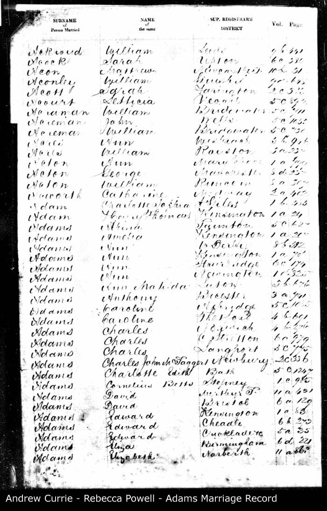
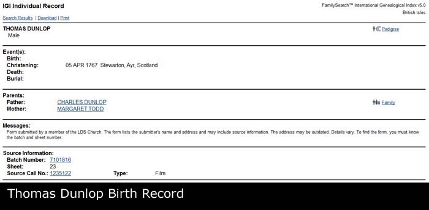
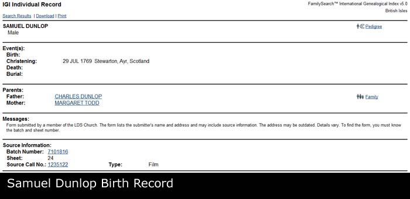
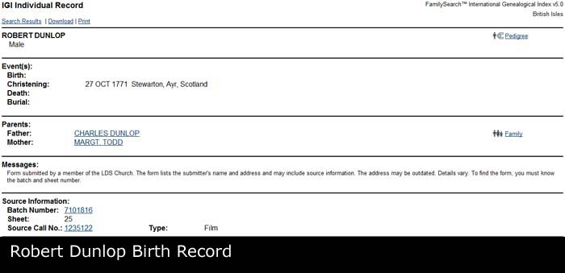
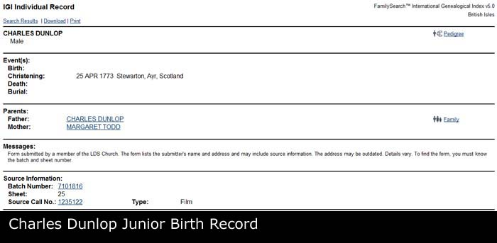

Margaret TODD b. 1742
Margaret TODD b. 1742 - Overview
- Overview
- Chronology
- Family As A Child
- Family As A Spouse
- Pedigree
- Descendants Chart
- Gallery
| Name | Full Name | Margaret TODD |
| Forename | Margaret | |
| Surname | TODD | |
| Sex | Female | |
| Birth | 1742, Stewarton, East Ayrshire, Scotland | |
| Spouse | Charles DUNLOP b. About 1739 [Family] | |
| Children | 1. Margaret DUNLOP b. 09/06/1765 2. Thomas DUNLOP b. 05/04/1767 3. Samuel DUNLOP b. 29/07/1769 4. Robert DUNLOP b. 27/10/1771 5. Charles DUNLOP b. 25/04/1773 | |
| Change Date | Date | 21/04/2011 |
| Time | 00:06 | |
Margaret TODD was born in 1742 in Stewarton, East Ayrshire, Scotland. 4 sons and one daughter listed. |  |
Children
| i | Margaret DUNLOP1 was born on 09/06/1765 in Stewarton, East Ayrshire, Scotland. She resided in 1841 in Main Street, Stewarton, East Ayrshire, Scotland. |  | ||
| ii | Thomas DUNLOP was born on 05/04/1767 in Stewarton, East Ayrshire, Scotland. |  | ||
| iii | Samuel DUNLOP was christened on 29/07/1769 in Stewarton, East Ayrshire, Scotland. |  | ||
| iv | Robert DUNLOP was christened on 27/10/1771 in Stewarton, East Ayrshire, Scotland. |  | ||
| v | Charles DUNLOP was born on 25/04/1773 in Stewarton, East Ayrshire, Scotland. |  |
Notes
1. Found a record of Andrew and Margaret Currie in Scottish 1841 Census; [Note Record]
Web page generated using a registered copy of GedScape software, licensed by Mark Watkin
Web page generated using a registered copy of GedScape software (www.gedscape.co.uk), licensed to Mark Watkin